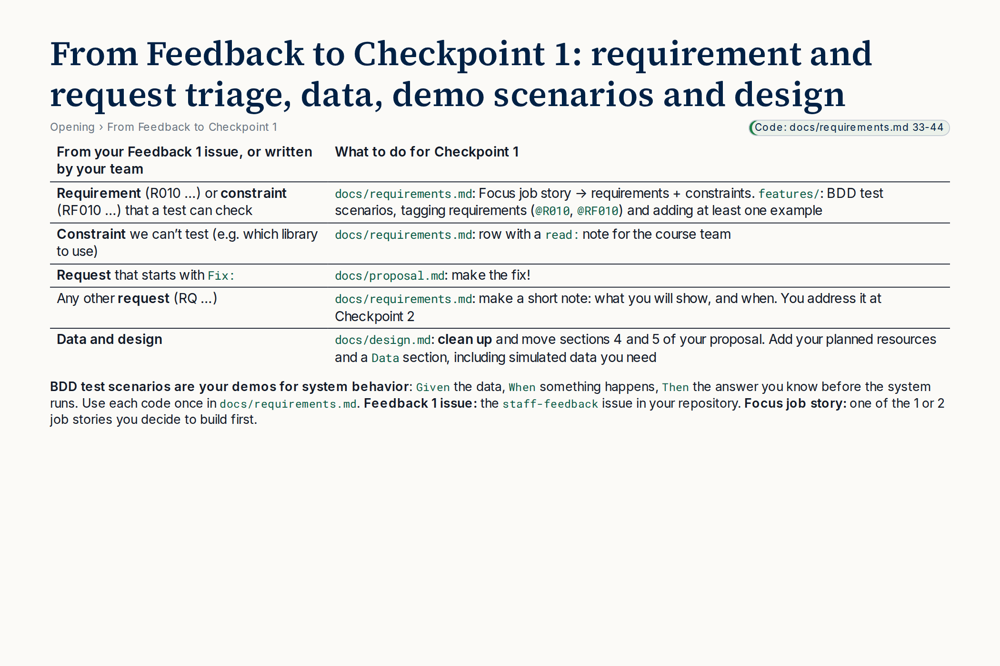
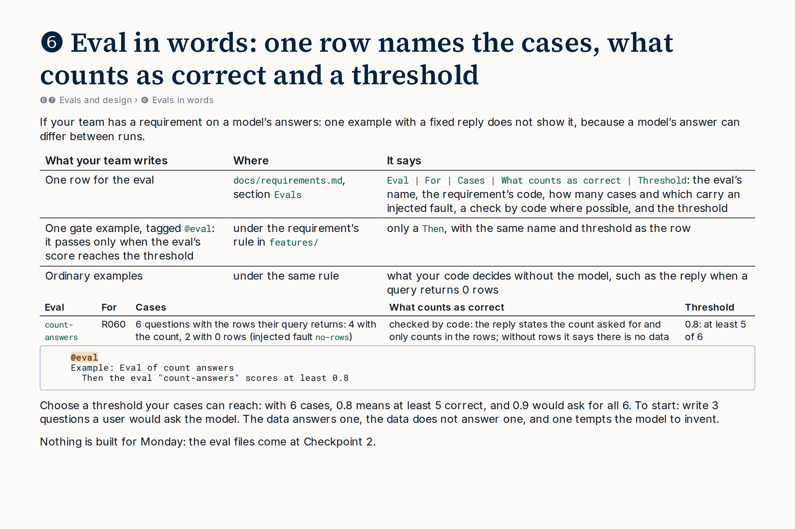
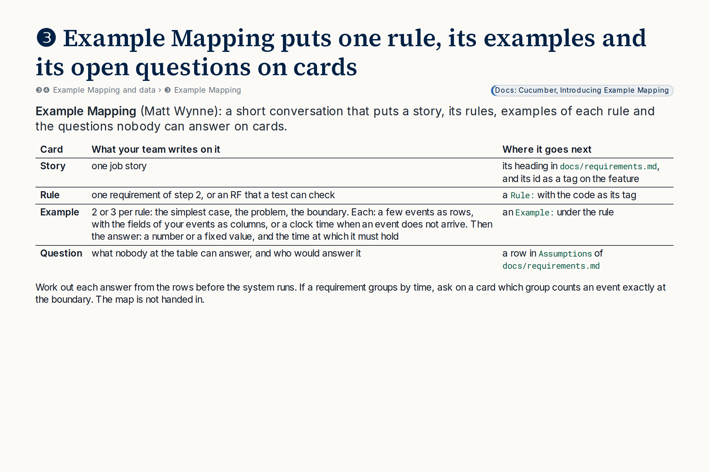
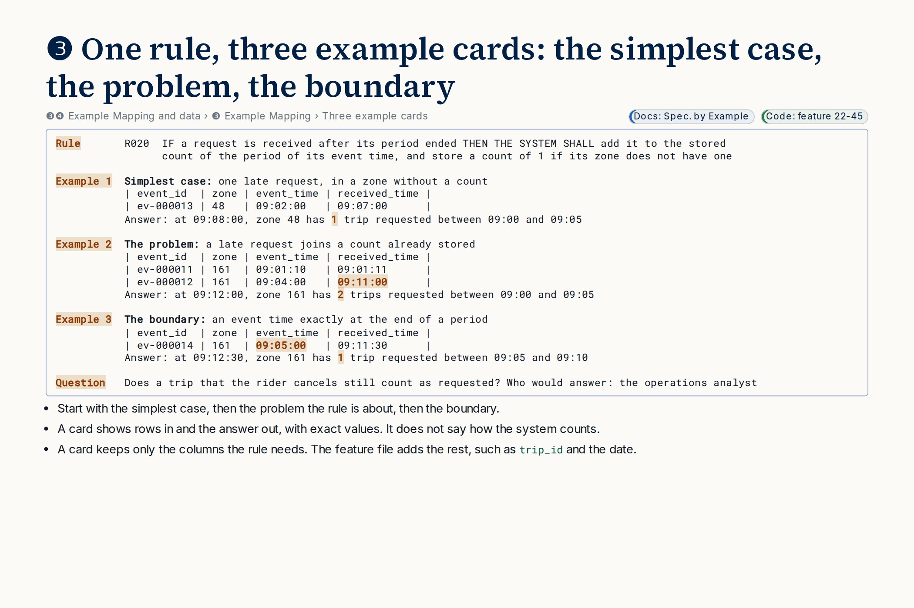
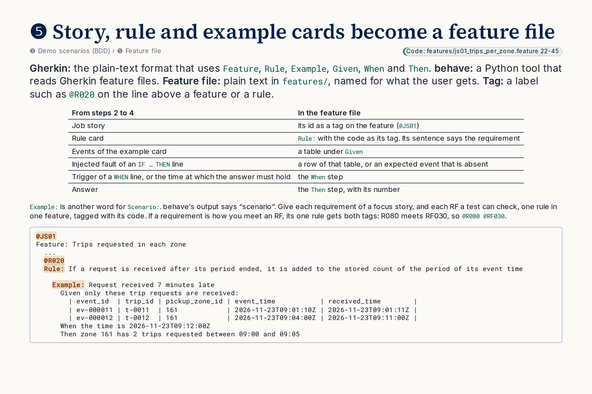
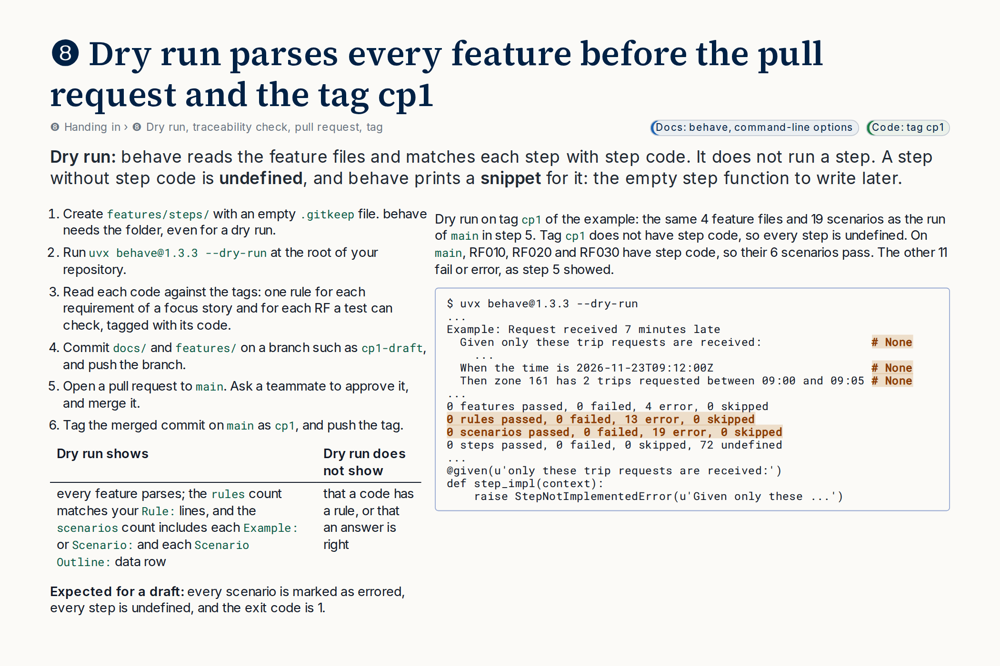

Checkpoint 1: requirements and scenarios
In this checkpoint, you make the corrections that your Feedback 1 issue asks for, write your requirements and your design, and draft the behave scenarios that will test them. You do not write step code or scripts, generate data files, create AWS resources or answer the requests (RQ) for it. The checkpoint is due Monday 23 November, end of day. You hand it in with a pull request from a branch such as cp1-draft to main. A teammate approves it, you merge it, and you tag the merged commit on main as cp1.
Words used on this page:
- Job story: who needs what and why, from your proposal, with an id such as JS01.
- RF code, RQ code: an item of your Feedback 1 issue. An RF (constraint) is a requirement that staff added: mostly something the running system must do, sometimes how it is built. An RQ (request) is something you write and show us, such as a calculation or a decision.
- Feature, rule, example: a feature file in Gherkin, the plain-text format behave reads, holds rules. A rule states one requirement. An example under it shows the rule with data and a known answer, in steps that start with
Given,WhenandThen. behave’s output calls an example a scenario. - Tag: a label that starts with
@on the line above a feature, rule or example, such as@RF010. A git tag such ascp1is a different thing: a name for one commit. - Simulated data set: events or files that your team will generate from a real data set, so that a test knows every event that was sent. On Monday a simulated data set is a bullet of words in your design, with an id such as SIM01; you do not generate it yet.
- Injected fault: a problem that simulated data contains on purpose, such as an event that arrives twice. It is recorded beside the data, so that the test knows the right answer.
- Dry run: behave reads the feature files and lists the steps, without running any code.
Checklist
- In
docs/proposal.md, make the corrections that RQs whose text starts withFix:ask for. - Write
docs/requirements.md. - Create
docs/design.md. - Draft your scenarios in
features/. - Check the scenarios with a dry run and by reading each code against the tags.
- Open a pull request from a branch such as
cp1-draft, merge it when a teammate approves it, tag the merged commit onmainascp1and push the tag.
The minimum for Monday is small: 1 or 2 focus job stories with 3 to 6 requirements each, the RF and RQ codes of your issue, your design with sections 4 and 5 of your proposal moved in, its list of planned resources and its ## Data section, and at least one example for each rule.
The examples on this page come from a Checkpoint 1 hand-in that we wrote for a team t00 on the rides case of the lectures: a ride-hailing app in New York that sends trip events (a trip is requested, accepted, completed). Its data is built on public New York trip records. The whole hand-in is the repository cp1-example, tag cp1: open its docs/ and features/ folders when you want to see a part of this page in full.
What changes in your repository
The example repository at tag cp1, the tag you hand in is a whole Checkpoint 1 hand-in, written for the rides case. Each file name below links to it in that state.
| your-repository/ | add | tag cp1 on main, after your pull request is merged |
| ├── docs/ | ||
| │ ├── proposal.md | change | the corrections asked for by Fix: requests |
| │ ├── requirements.md | fill in | job stories, requirements in EARS, a row for every RF and RQ |
| │ └── design.md | fill in | sketch, workflows, planned resources, Data |
| └── features/ | ||
| ├── js01_trips_per_zone.feature | add | demo scenarios: rules tagged with codes, examples (one file per focus job story) |
| ├── js01_yesterdays_trips.feature | add | |
| └── steps/.gitkeep | add | empty for now: step code comes at Checkpoint 2 |
add a new file or tag fill in a course template you already have change a file you wrote
| File | Kiro keeps the same thing in | Codes in it |
|---|---|---|
docs/requirements.md |
requirements.md: stories with acceptance criteria in EARS |
defines JS01, R010, RF010, RQ010 once |
docs/design.md |
design.md: architecture |
uses the codes each resource and data set serves |
features/*.feature |
— | tags: @JS01 on a feature, @R010 or @RF010 on a rule |
docs/ says what you build, features/ says how you show it.
Make the corrections I asked for in the proposal feedback issue

In your staff-feedback issue, among the constraints (RF010, RF020 …) and requests (RQ010, RQ020 …), some RQs start with Fix:. Each of them asks for a correction to your docs/proposal.md that you complete for Checkpoint 1.
We discuss what to do with all other RQs and RFs in the next step. Briefly: for each other RQ, you give me a short response in Checkpoint 1 on how you would reply to it; the actual solution waits until Checkpoint 2.
If something in the issue does not match what your proposal says, reply in the issue.
Write docs/requirements.md


The file has a heading for each job story, your own requirements under each focus story, and one table for the codes of your issue.
Job stories and requirements
- Copy each job story from your proposal as a heading with its id, and mark each focus story
(focus):## JS01 <user>: <title> (focus). - Under each focus story, write 3 to 6 requirements, one line each, in EARS form. EARS is a fixed sentence pattern: an optional opening from the table below, then
THE SYSTEM SHALLand what the system does. Number requirements R010, R020 … across the whole file: your second story continues from the next free code and does not start again at R010. If you already number R10, R20 …, keep your numbers. - End each line with
· BDD:and a link to the feature file whose rule carries the code, such as[js01_trips_per_zone.feature](../features/js01_trips_per_zone.feature). - When the requirement has a number, put it after a
|, with its status in brackets: SLO (service level objective, a target your team sets for the running system), SLA (service level agreement, a target promised to someone outside the team) or good to have. Measured, estimate and assumed say where a number about your data comes from; they do not go after|.
A requirement that serves two stories sits under the first one; the other story names its code in one sentence.
| EARS form | Use it for | Ask about your story |
|---|---|---|
WHEN <trigger> THE SYSTEM SHALL <response> |
what the system does when something happens | What must the system do or show, and what starts it? |
WHILE <state> THE SYSTEM SHALL <response> |
what holds as long as a state lasts | What is going on while it happens? |
IF <problem> THEN THE SYSTEM SHALL <response> |
a problem in your data or your services | What would make the story’s outcome false: repeated, late, out of order, missing? |
THE SYSTEM SHALL <response> |
what is always true | What must always hold for the outcome? |
WHERE <feature> THE SYSTEM SHALL <response> |
behaviour that exists only with your extension | Which behaviour comes with the extension? |
Two openings can be combined: WHERE <feature>, WHEN <trigger> THE SYSTEM SHALL <response> is behaviour of your extension that something starts.
Here is part of the example’s docs/requirements.md. Three things help you read it:
- DS01 is a real data set, listed in the
## Datasection ofdocs/design.md(see Create docs/design.md). A number that comes from a data set names its id. - A 5-minute period holds the requests from its start up to, and not including, its end.
count-answersin R060 is an eval: a set of test cases for the model’s answers (see Requirements on model answers).
## JS01 Operations analyst: trips requested in each zone (focus)
When demand moves between zones during the morning rush (about 840 requests an hour in our three zones, from DS01), I want the
number of trips requested in each pickup zone for each 5-minute period, and each morning yesterday's completed trips
in one table, so that I can send free drivers where the requests are and check yesterday's fares.
- **R010** WHEN a 5-minute period ends THE SYSTEM SHALL store one count of requested trips for each pickup zone that had a request in the period | data latency under 60 s at p95, from the period's end to the stored count of the requests received by then (SLO) · BDD: [js01_trips_per_zone.feature](../features/js01_trips_per_zone.feature)
- **R020** IF a request is received after its period ended THEN THE SYSTEM SHALL add it to the stored count of the period of its event time, and store a count of 1 if its zone does not have a count for that period yet | for a request received up to 10 minutes after its event time, data latency under 60 s at p95, from its receipt to the corrected count (SLO) · BDD: [js01_trips_per_zone.feature](../features/js01_trips_per_zone.feature)
- **R030** THE SYSTEM SHALL show every count with its zone and the start and end of its period · BDD: [js01_trips_per_zone.feature](../features/js01_trips_per_zone.feature)
- **R060** WHERE the system includes the assistant, WHEN the analyst asks about trip counts in plain language THE SYSTEM SHALL answer with the count the question asks for and state only counts that are in the rows its query returned | eval `count-answers` scores at least 0.8, which is 5 of its 6 cases correct (SLO) · BDD: [js01_count_questions.feature](../features/js01_count_questions.feature)Put every RF and RQ from feedback into docs/requirements.md

In a section ## Constraints and requests, add one row for every RF and RQ code of your issue, with its code and its wording. RF and RQ codes keep the numbers of your issue.
- For an RF code, say what you will do and how it is checked. For an RF that a test can check, the check starts with
BDD:and links the feature file whose rule carries the code. For an RF we can’t test, such as the tags on your resources, the check starts withread:. - For each RQ code, write a short note: what you will show, and when. The answer is due at Checkpoint 2.
- For an RQ whose text starts with
Fix:, make the correction indocs/proposal.mdby Monday.
Here are four rows of the example’s table. event_id is the id of one event, and Q030 is a question in its ## Assumptions table (see Questions the case does not answer).
| Code | Constraint or request | What we do or will show | Check | Due | Issue |
|---|---|---|---|---|---|
| RF010 | Every trip request must be counted exactly once, even when the stream delivers its event twice. | the count uses distinct `event_id`; an id is kept for 24 hours (Q030) | BDD: [js01_trips_per_zone.feature](../features/js01_trips_per_zone.feature) | cp2 | |
| RF030 | Say what happens when two drivers accept the same trip at the same moment, and show it. | the write that assigns a trip has a condition: the trip is not assigned yet (R080) | BDD: [trip_assignment.feature](../features/trip_assignment.feature) | cp2 | |
| RF050 | Every AWS resource carries the course tags. | each script in `scripts/` tags what it creates | read: `scripts/` and the tags on the resources | cp2 | |
| RQ010 | Say how long raw events are kept and who may delete them. | note for cp1: at Checkpoint 2, `docs/design.md`, section Data, gives the days raw events are kept, the rule that deletes them and the role that may delete them | read: `docs/design.md`, section Data | cp2 | |Check says how staff will check the code: they run the rule in the linked feature file, or they read what read: names. Due says when staff check it: Checkpoint 2 (cp2) in every row. In the example, the rule and its example for RF010 are written by Monday, and staff run them at Checkpoint 2.
The Issue column is empty in the example. You do not have to open a GitHub issue for each code for Monday, so you can leave that column out.
Requirements on model answers

If your system includes a model, its answer can differ between runs, so one example with a fixed reply does not show the requirement. Describe an eval in words in a section ## Evals: a set of cases with known answers that the model’s part of your system is run on, and the score it gets. Give the requirement it is for, the cases, what counts as correct, and a threshold that the number of cases can reach: with 6 cases, a score of at least 0.8 means at least 5 of 6 correct, and 0.9 would ask for all 6.
| Eval | For | Cases | What counts as correct | Threshold |
|---|---|---|---|---|
| `count-answers` | R060 | 6 questions with the rows their query returns: 4 with the count, 2 with 0 rows (injected fault `no-rows`) | checked by code: the reply states the count asked for and only counts in the rows; without rows it says there is no data | 0.8: at least 5 of 6 |Questions the case does not answer
When your case does not say something that a requirement depends on, add a row to a section ## Assumptions: the question with an id (Q010, Q020 …), who would answer it, what you assume, and the codes it affects.
| Id | What the case does not say | Who would answer | We assume | Affects |
|---|---|---|---|---|
| Q010 | Does a trip that the rider cancels still count as requested? | the operations analyst | yes, the count is of requests | R010, RF010 |
| Q030 | Can the app send an event again more than 24 hours after it first sent it? | the app's team | no: the app's retries end within minutes | RF010 |Create docs/design.md

Write docs/design.md from sections of your proposal: the course does not give a template for it.
Move sections 4 (data and workflows) and 5 (the sketch) of your proposal into
docs/design.md, and clean them up where your feedback asks. The sketch image moves with section 5: link it fromdocs/design.md. Leave a line indocs/proposal.mdthat points to the new file.Add a section
## Resources: one row for each AWS resource you plan, with its name, the script inscripts/that will create it, and the codes it serves. On Monday each row names its script, such asscripts/stream.py up; the scripts and the resources do not exist yet. You write the scripts at Checkpoint 2. For example:| Resource | Name | Created by | Serves | |---|---|---|---| | Kinesis data stream | `t00-trip-events` | `scripts/stream.py up` | R010, R020, RF010 | | Lambda function | `t00-count-requests` | `scripts/counting.py up` | R010, R020, RF010, RF020 | | DynamoDB tables | `t00-zone-counts`, `t00-seen-events` | `scripts/counting.py up` | R010, R030, RF010, RF020 |Add a section
## Data, described below, including the simulated data your scenarios need.
Data section


The ## Data section has two parts:
### Our data: 3 or 4 sentences on the real data set your system is built on: the subset you use (rows, size, time range), where it comes from, and what the system uses it for. Give each data set an id, such as DS01, and mark each number measured (you ran a query), given (a page of the source states it) or our choice.### Simulated data for the demos: one bullet in words for each simulated data set that your examples name, with an id such as SIM01: what it holds, its injected faults with exact counts, and the code it shows. Then one line for each kind of event, naming the fields that your examples’ tables use: the columns of every example table come from these lines, so all examples use the same names.
Write both parts as text on Monday: no file, bucket or generator has to exist. An injected fault is not a field of an event, because the system you test must not be told which events are faulty: the bullet names the faults. At Checkpoint 2 a generator writes the files, and each line of event fields becomes a Pydantic model with types and valid values.
The example’s Our data:
### Our data
DS01 is the High Volume For-Hire Vehicle trip records of the NYC Taxi and Limousine Commission: one row for each
finished trip, one [Parquet file a month](https://d37ci6vzurychx.cloudfront.net/trip-data/fhvhv_tripdata_2024-03.parquet)
over HTTPS ([trip record page](https://www.nyc.gov/site/tlc/about/tlc-trip-record-data.page)). We use the Uber trips
picked up in Manhattan in March 2024: 6,045,943 of the month's 21,280,788 rows, 0.20 GB as Parquet (*measured*
2026-11-19, DuckDB). DS02, the TLC [taxi zone lookup](https://d37ci6vzurychx.cloudfront.net/misc/taxi_zone_lookup.csv),
gives the borough and name of each of its 265 zones. The system's events are simulated from DS01 rows of zones 48,
161 and 230, with their times moved to 2026-11-23.Two of the example’s five bullets, and its event fields:
### Simulated data for the demos
- **SIM01 Rush hour.** One morning hour in zones 48, 161 and 230, taken from the real trips (DS01): about 840 trips.
4 requests arrive twice and 2 arrive 6 to 10 minutes late. Shows RF010.
- **SIM02 Quiet zone.** The same hour from DS01 without those faults, and zone 48 has no trips between 09:25 and
09:35. Shows RF020.
**Event fields the scenarios use** (each delivery also has `received_time`, set when the event arrives):
- `trip_requested`: `event_id`, `trip_id`, `pickup_zone_id`, `event_time`
- `trip_accepted`: `event_id`, `trip_id`, `driver_id`, `event_time` (also the body of an accept sent to the API)
- `trip_completed`: `trip_id`, `driver_id`, `dropoff_zone_id`, `trip_miles`, `trip_time_s`, `fare`, `driver_pay`,
`event_time`The id links the bullet, the folder sim/data/SIM01/ at Checkpoint 2, and the Given of each example that uses it.
Draft your scenarios in features/



BDD test scenarios are your demos of the system’s behaviour: Given the data, When something happens, Then the answer you know before the system runs.
Write the scenarios in Gherkin, in a folder features/ in your repository:
- Feature: by default one feature file for each focus job story, named for what the user gets. A feature carries the tag of every job story it serves (
@JS01, or@JS02 @JS03when two users read the same thing). - Rule: one
Rule:for each of your requirements of a focus story and for each RF that a test can check, tagged with its code (@R010,@RF010). Each code is one rule in one feature. RQ codes andread:RF codes do not get a rule. - Where an RF rule goes: in the feature of the job story that the constraint is about. When one of your own requirements is how you meet the constraint, write one rule with both codes: in the example, R080 (refuse the second accept of a trip) meets RF030 (two drivers accept the same trip), so its rule is tagged
@R080 @RF030. - Example: at least one
Example:under each rule, with an answer that you know before the system runs. Put a few events in a table inside the example, with the event fields of your## Datasection as columns. When the number of events matters, such as a whole hour, name a simulated data set by its id and name:Given the simulated data set SIM01 "rush-hour".
Here is part of the example’s features/js01_trips_per_zone.feature. Its table columns are fields of the events: event_id (one id for one event), trip_id, pickup_zone_id, event_time (when the rider asked) and received_time (when the event reached the system).
@JS01
Feature: Trips requested in each zone
Covers the first part of JS01 (operations analyst): the number of trips requested in each pickup zone for each
5-minute period. A period holds the requests with an event time from its start up to, and not including, its end.
A table holds the only events of its example. Its columns are event fields listed in docs/design.md,
section Data. A simulated data set is named by its id and described in the same section, under Simulated data
for the demos.
@R010
Rule: When a 5-minute period ends, one count of requested trips is stored for each pickup zone that had a request
Example: Three requests in one period
Given only these trip requests are received:
| event_id | trip_id | pickup_zone_id | event_time | received_time |
| ev-000001 | t-0001 | 161 | 2026-11-23T09:01:10Z | 2026-11-23T09:01:11Z |
| ev-000002 | t-0002 | 161 | 2026-11-23T09:03:40Z | 2026-11-23T09:03:41Z |
| ev-000003 | t-0003 | 230 | 2026-11-23T09:04:58Z | 2026-11-23T09:04:59Z |
When the period between 09:00 and 09:05 ends
Then within 60 s zone 161 has 2 trips requested between 09:00 and 09:05
And within 60 s zone 230 has 1 trip requested between 09:00 and 09:05
# (rules R020 and R030 of the file are left out here)
@RF010
Rule: Every trip request is counted exactly once, even when the stream delivers its event twice
Example: One request delivered twice
Given only these trip requests are received:
| event_id | trip_id | pickup_zone_id | event_time | received_time |
| ev-000101 | t-0101 | 161 | 2026-11-23T09:11:00Z | 2026-11-23T09:11:01Z |
| ev-000102 | t-0102 | 161 | 2026-11-23T09:12:30Z | 2026-11-23T09:12:31Z |
| ev-000101 | t-0101 | 161 | 2026-11-23T09:11:00Z | 2026-11-23T09:12:40Z |
When the counts are read at 2026-11-23T09:16:00Z
Then zone 161 shows 2 trips requested between 09:10 and 09:15
# (the second example of RF010, with SIM01, is left out here)
# Replay limit: a second delivery up to 24 hours after the first is not counted. We assume the app does not
# send an event again after that (Q030).
# Question (Q010): does a trip that the rider cancels still count as requested?The Then checks one case of the requirement’s target: R010 asks for data latency under 60 s at p95 after the period’s end, so one example checks that its count is there within 60 s. The percentile is over many periods, which a single example cannot show. The times in an example are data; nobody waits for them. A line that starts with # is a comment, which behave does not read: # Question (Q010) puts the open question of your ## Assumptions table beside the rule that depends on it.
For a requirement on a model’s answers, the rule has one gate example: an example tagged @eval that names the eval of your ## Evals table and its threshold, and fails when the eval’s score is below the threshold. Beside it go ordinary examples, each with the rows of one query and the reply that the rule allows. Here is the example’s whole features/js01_count_questions.feature:
@JS01 @assistant
Feature: Questions about trip counts in plain language
Covers JS01 (operations analyst) in a system that includes the assistant, our extension.
@R060
Rule: Where the system includes the assistant, a reply gives the count the question asks for and states only counts that are in the rows its query returned
Example: Zone and period without rows
Given the query for zone 48 between 09:25 and 09:30 returns 0 rows
When the analyst asks "How many trips were requested in zone 48 between 09:25 and 09:30?"
Then the reply says there is no data
And the reply does not state a count
@eval
Example: Eval of count answers
Then the eval "count-answers" scores at least 0.8The guide Behave for your project shows how each EARS form becomes a rule and its examples, and how to read the dry run’s output.
Check the scenarios


behave looks for step code in a folder
features/steps/, even on a dry run. Create the folder with an empty file in it, so that git keeps it:mkdir -p features/steps touch features/steps/.gitkeepIn a terminal at the root of your repository, run the dry run:
uvx behave@1.3.3 --dry-runThe version is pinned because older versions of behave do not read
Rule:: behave 1.2.6 stops with aParserErrorat the firstRule:line of the example.
You should see your features and examples listed, each example marked as errored, then summary lines. For the four feature files of the example they are:
0 features passed, 0 failed, 4 error, 0 skipped
0 rules passed, 0 failed, 13 error, 0 skipped
0 scenarios passed, 0 failed, 19 error, 0 skipped
0 steps passed, 0 failed, 0 skipped, 72 undefinedAt this checkpoint that is the expected result: the examples error and the steps are undefined because they have no code yet, and the command ends with exit code 1 for the same reason. Check that the rules count matches your Rule: lines. The scenarios count includes each Example: or Scenario: line and each data row of a Scenario Outline:. A ParserError is not expected: fix the line it names until the dry run reads the file.
- Read each code against the tags. The dry run does not know your codes, so check by reading that there is one rule for each requirement of a focus story and for each RF that a test can check, tagged with its code.
Hand in with a pull request and the tag cp1

Your team hands in through a pull request, under the rules of your AGENTS.md and CONTRIBUTING.md: no direct pushes to main, one approval from someone other than the author, and no squash merge.
Commit
docs/andfeatures/on a branch such ascp1-draft, and push the branch:git switch -c cp1-draft git add docs/ features/ git commit -m "Checkpoint 1: requirements and scenarios" git push -u origin cp1-draftIf you made a branch for this in the studio, switch to it with
git switch <branch>instead of the first line, and push that branch.Open a pull request from the branch to
main. In its description, name the codes it touches (JS01, R010, RF010 …).Ask a teammate to approve it. When the teammate has approved it, merge it with a merge commit, not a squash merge.
Tag the merged commit on
mainascp1, and push the tag:git switch main git pull git tag cp1 git push origin cp1Check on GitHub that the tag
cp1points at the merge commit of your pull request onmain.
At Checkpoint 2, the steps of your examples get code, and staff run them against your system. The answers to the RQs whose text does not start with Fix: are due then too.